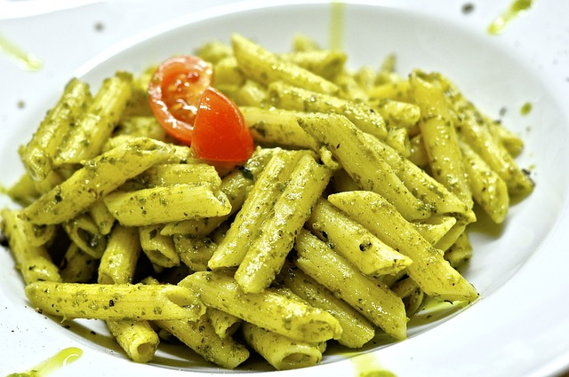

Hemmagjord Pesto
Ingredienser
- 1 kruka färsk basilika
- 3 dl riven parmesan
- 1 dl pinjenötter
- 1 vitlöksklyfta
- 1 dl olivolja
- 1 nypa salt
Instruktioner
1.Rosta pinjenötterna lätt i en torr stekpanna tills de får en gyllenbrun färg.
2.Lägg basilika, pinjenötter, riven parmesan och en pressad vitlöksklyfta i en mixer.
3.Mixa ingredienserna och tillsätt olivolja i en tunn stråle medan du mixar.
4.Smaka av med en nypa salt.
5.Förvara i en lufttät burk i kylen och njut av din hemmagjorda pesto!
Fler recept